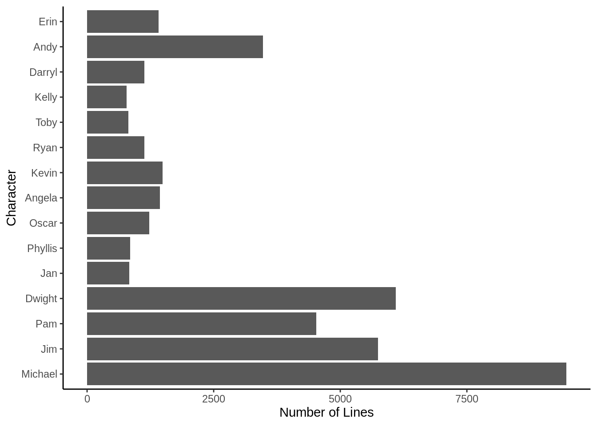

Is This Good for the Company?
Categories:
R
Tags:
text classification
In this post I’m going to build a text classification model using the script from The Office. I’ll use the R package dundermifflin to access the quote data I’ll need to build the classification model as well as various packages from tidymodels and the tidyverse for data wrangling, data visualization, model fitting and evaluation, and prediction.
First, let’s load the packages we’ll need and explore the data a bit:
library(dundermifflin)
library(tidymodels)
library(tidyverse)
library(textrecipes)
library(ggthemes)
quotes <- office_quotes %>% mutate(character = as_factor(character)) %>%
group_by(character) %>% add_tally() %>% filter(n >= 700) %>%
select(character, quote, n) I filtered the data so that we’re only going to consider quotes from charters with at least 700 lines, which leaves us with 15 characters. Let’s take a look at the data:
ggplot(quotes, aes(character)) + geom_bar() +
coord_flip() + theme_classic() +
xlab("Character") + ylab("Number of Lines") 